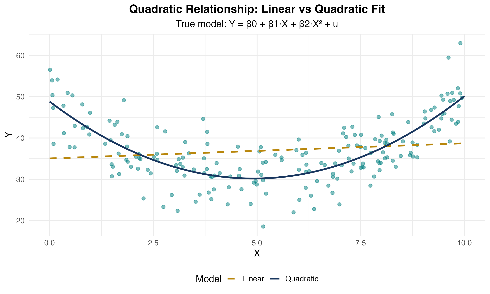
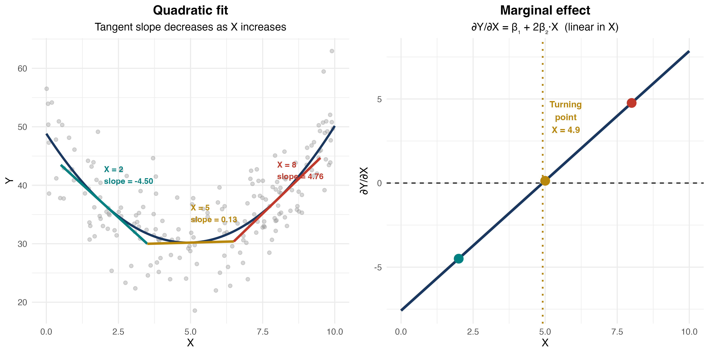
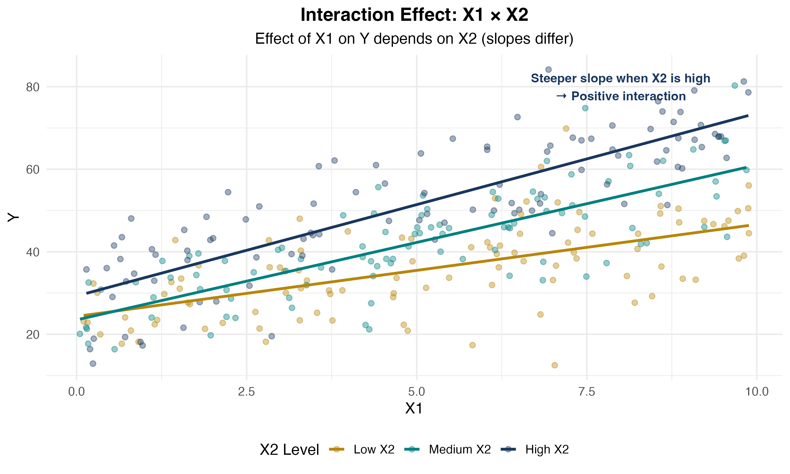
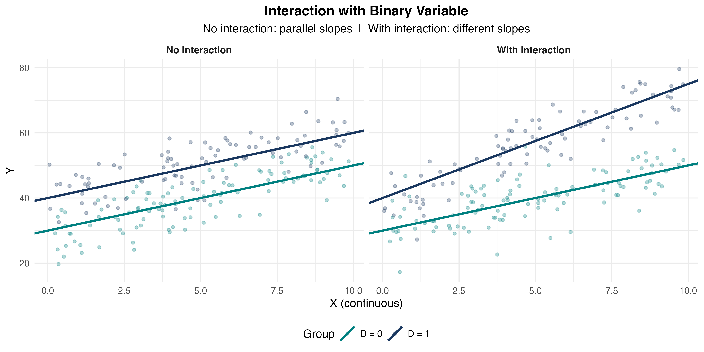
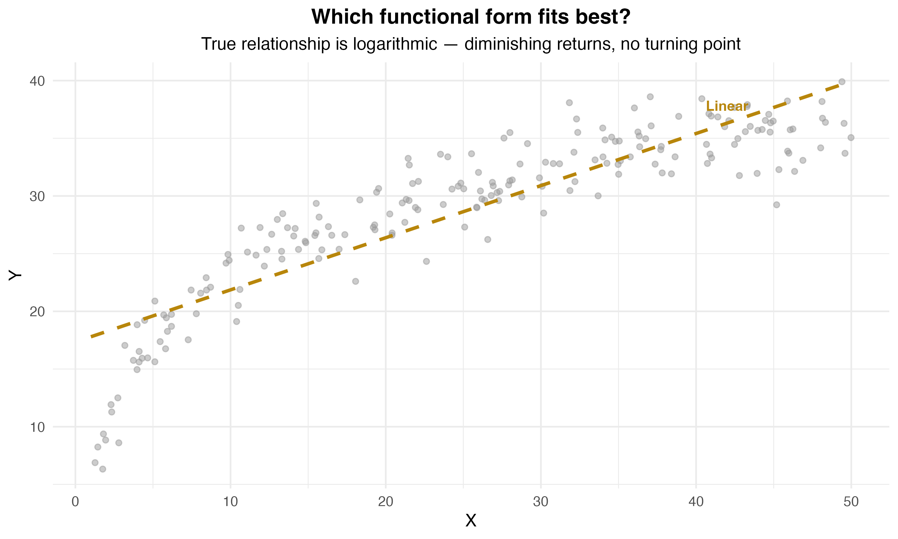
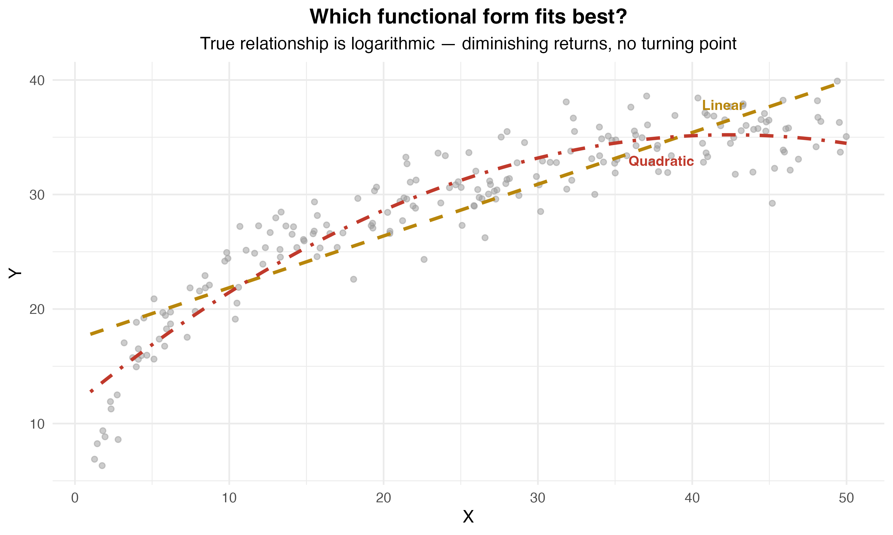
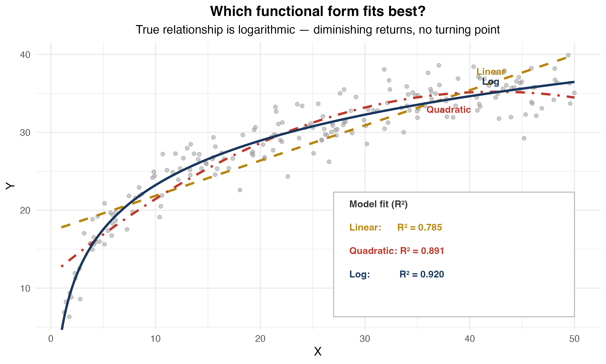
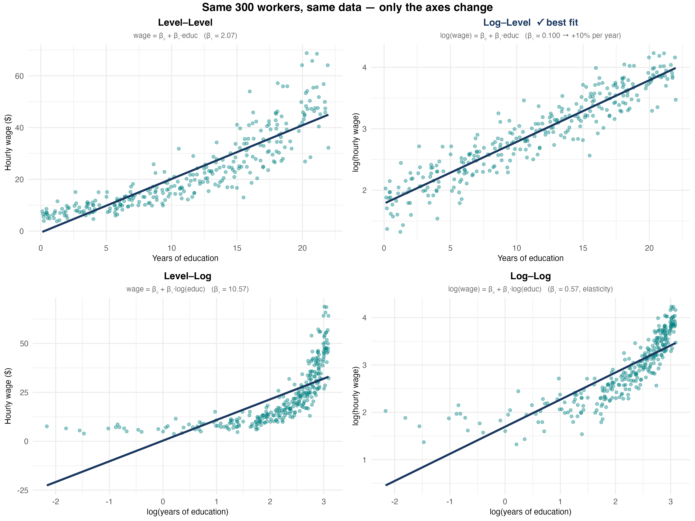
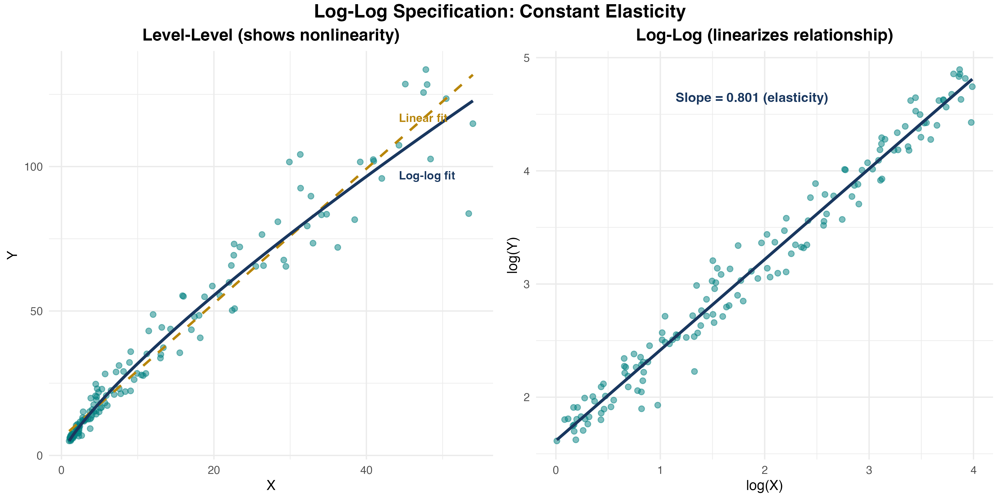

Beyond the Straight Line
Spring 2026
Central Question
What if the relationship between \(X\) and \(Y\) is not a straight line?
By the end of this chapter, you will:
So far, we’ve assumed relationships are linear:
\[ Y_i = \beta_0 + \beta_1 X_i + u_i \]
Interpretation: A one-unit increase in \(X\) changes \(Y\) by \(\beta_1\) units, regardless of \(X\)’s current value.
But is this realistic?
Diminishing returns:
Increasing returns:
Interactions:
Polynomial regression — Add \(X^2\), \(X^3\), etc. to model curvature
Interaction terms — Include \(X_1 \cdot X_2\) to allow effects to vary
Logarithmic transformations — Use \(\log(Y)\) or \(\log(X)\) for percentage changes
Key Insight
All three remain linear in parameters — we can still use OLS! (A model like \(Y_i = \beta_0 e^{\beta_1 X_i} + u_i\) is not linear in parameters and cannot be estimated by OLS directly.)
General Form
\[ Y_i = f(X_{1i}, X_{2i}, \ldots, X_{ki}) + u_i \]
The OLS assumptions carry over unchanged:
The effect of a change in \(X_1\), holding \(X_2, \ldots, X_k\) constant:
\[ \Delta Y = f(X_1 + \Delta X_1, X_2, \ldots, X_k) - f(X_1, X_2, \ldots, X_k) \]
Key difference from the linear model: the marginal effect depends on the current value of \(X_1\) (and possibly other variables).
In the linear model: \(\Delta Y = \beta_1 \Delta X_1\) — constant everywhere.
In a nonlinear model: \(\Delta Y\) must be evaluated at a specific value of \(X_1\).
Quadratic Regression Model
\[ Y_i = \beta_0 + \beta_1 X_i + \beta_2 X_i^2 + u_i \]
Why quadratic?
Still linear in parameters: We estimate \(\beta_0, \beta_1, \beta_2\) via OLS!

\[ Y_i = \beta_0 + \beta_1 X_i + \beta_2 X_i^2 + u_i \]
Key point: The effect of \(X\) on \(Y\) is no longer constant!
Marginal Effect in Quadratic Model
\[ \frac{\partial Y}{\partial X} = \beta_1 + 2\beta_2 X \]
The marginal effect depends on the value of \(X\)!
Interpretation:
Model:
\[ \log(wage) = \beta_0 + \beta_1 \cdot experience + \beta_2 \cdot experience^2 + u \]
Estimated:
\[ \widehat{\log(wage)} = 1.5 + 0.08 \cdot experience - 0.0012 \cdot experience^2 \]
Interpretation:
Estimated model:
\[ \log(wage) = 1.5 + 0.08 \cdot exper - 0.0012 \cdot exper^2 \]
At \(exper = 10\) years:
\[ \frac{\partial \log(wage)}{\partial exper} = 0.08 - 2(0.0012)(10) = 0.08 - 0.024 = 0.056 \]
At \(exper = 30\) years:
\[ \frac{\partial \log(wage)}{\partial exper} = 0.08 - 2(0.0012)(30) = 0.08 - 0.072 = 0.008 \]
Interpretation: The wage boost from an additional year of experience falls from 5.6% (at 10 years) to 0.8% (at 30 years).
For an inverted-U relationship, where does the maximum occur?
Set the marginal effect to zero:
\[ \beta_1 + 2\beta_2 X^* = 0 \quad \Rightarrow \quad X^* = -\frac{\beta_1}{2\beta_2} \]
Example: \(\log(wage) = 1.5 + 0.08 \cdot exper - 0.0012 \cdot exper^2\)
\[ exper^* = -\frac{0.08}{2(-0.0012)} = \frac{0.08}{0.0024} \approx 33.3 \text{ years} \]
Interpretation: Wages peak at about 33 years of experience, then decline.

Question
You estimate: \(sales = 100 + 15 \cdot price - 0.5 \cdot price^2\)
Answer
Part 1: Marginal effect \(= 15 - 2(0.5)(10) = 15 - 10 = 5\). At $10, raising price by $1 increases sales by 5 units.
Part 2: Turning point: \(price^* = -\frac{15}{2(-0.5)} = 15\). Sales are maximized at \(price = 15\).
Cubic model:
\[ Y_i = \beta_0 + \beta_1 X_i + \beta_2 X_i^2 + \beta_3 X_i^3 + u_i \]
Marginal effect:
\[ \frac{\partial Y}{\partial X} = \beta_1 + 2\beta_2 X + 3\beta_3 X^2 \]
When to use: Multiple turning points, S-shaped patterns.
Overfitting
Overfitting occurs when we end up fitting the noise in the data rather than the underlying relationship. The model fits the sample well but performs poorly out of sample.
Warning: Higher-order polynomials can overfit and behave erratically at extremes. Use sparingly!
Create polynomial terms:
Estimate model:
Compute marginal effect at mean experience:
Shortcut using margins:
Two key hypothesis tests:
Test 1 — Is the quadratic term significant?
\[H_0: \beta_2 = 0 \quad \text{vs.} \quad H_1: \beta_2 \neq 0\]
Use the \(t\)-statistic on \(\hat{\beta}_2\). Reject → evidence of a nonlinear relationship.
Test 2 — Does \(X\) have any effect at all? (joint test)
\[H_0: \beta_1 = \beta_2 = 0\]
Use the \(F\)-statistic. Reject → \(X\) matters (linearly or nonlinearly).
Test if quadratic term is needed:
Interpreting the Tests
Interaction Effect
The effect of \(X_1\) on \(Y\) depends on the value of \(X_2\).
Examples:
Mathematical representation:
\[ Y_i = \beta_0 + \beta_1 X_{1i} + \beta_2 X_{2i} + \beta_3 (X_{1i} \times X_{2i}) + u_i \]
The interaction term is \(X_1 \times X_2\).
All three are estimated the same way: include the product term plus both main effects.
Model:
\[ Y_i = \beta_0 + \beta_1 D_{1i} + \beta_2 D_{2i} + \beta_3 (D_{1i} \cdot D_{2i}) + u_i \]
where \(D_1\) and \(D_2\) are dummy variables.
Predicted values for each group:
| \(D_2 = 0\) | \(D_2 = 1\) | |
|---|---|---|
| \(D_1 = 0\) | \(\beta_0\) | \(\beta_0 + \beta_2\) |
| \(D_1 = 1\) | \(\beta_0 + \beta_1\) | \(\beta_0 + \beta_1 + \beta_2 + \beta_3\) |
\(\beta_3\) captures the extra effect of being in both groups simultaneously — beyond what you’d expect from the main effects alone.
Question: Does the gender wage gap differ in the public sector?
Model:
\[ wage = \beta_0 + \beta_1 \cdot female + \beta_2 \cdot public + \beta_3 (female \times public) + u \]
Estimated:
\[ \hat{wage} = 25 - 4 \cdot female + 3 \cdot public + 2 \cdot (female \times public) \]
What is the predicted wage for each group? What does \(\hat{\beta}_3\) tell us?
Model:
\[ Y_i = \beta_0 + \beta_1 X_{1i} + \beta_2 X_{2i} + \beta_3 (X_{1i} \cdot X_{2i}) + u_i \]
Marginal effect of \(X_1\):
\[ \frac{\partial Y}{\partial X_1} = \beta_1 + \beta_3 X_2 \]
Interpretation:
Question: Does the return to education depend on experience?
Model:
\[ wage = \beta_0 + \beta_1 \cdot education + \beta_2 \cdot experience + \beta_3 (education \times experience) + u \]
Estimated:
\[ \hat{wage} = 2.0 + 1.5 \cdot education + 0.3 \cdot experience + 0.05 \cdot (education \times experience) \]
Interpretation:

Model:
\[ Y_i = \beta_0 + \beta_1 X_i + \beta_2 D_i + \beta_3 (X_i \cdot D_i) + u_i \]
where \(D_i\) is a dummy variable (0 or 1).
Interpretation:
Model:
\[ wage = \beta_0 + \beta_1 \cdot education + \beta_2 \cdot female + \beta_3 (education \times female) + u \]
Estimated:
\[ \hat{wage} = 3.0 + 2.0 \cdot education - 1.5 \cdot female - 0.3 \cdot (education \times female) \]
Interpretation:

Question
You estimate: \(price = 50 + 10 \cdot quality + 5 \cdot advertising + 2 \cdot (quality \times advertising)\)
Answer
Marginal effect of advertising = \(5 + 2 \times quality\)
Part 1: At quality = 5: effect = \(5 + 2(5) = 15\)
Part 2: At quality = 10: effect = \(5 + 2(10) = 25\)
Advertising is more effective for higher-quality products!
Method 1: Create interaction manually
Method 2: Factor variable notation (preferred)
Compute marginal effects at different values:
Factor variable prefixes
c.varname — tells Stata to treat the variable as continuousi.varname — tells Stata to treat the variable as categorical/dummy## — includes the interaction and both main effects automaticallyString variables: Factor notation requires numeric variables. If your variable is a string, convert it first: encode strvar, gen(numvar), then use i.numvar. Alternatively, use the older xi: prefix: xi: regress wage i.female*education.
Mistake 1: Including interaction but omitting main effects
Never include \(X_1 \times X_2\) without also including \(X_1\) and \(X_2\) separately. Omitting a main effect forces a constraint (e.g., that the baseline group has a zero intercept) that is almost always wrong.
Mistake 2: Interpreting \(\beta_1\) as “the” effect of \(X_1\)
In \(Y = \beta_0 + \beta_1 X_1 + \beta_2 X_2 + \beta_3 X_1 X_2\), the effect of \(X_1\) is \(\beta_1 + \beta_3 X_2\) — it depends on \(X_2\). \(\beta_1\) is only the effect of \(X_1\) when \(X_2 = 0\), which may not be a meaningful value.
Mistake 3: Testing the wrong hypothesis
To test whether an interaction matters, test \(H_0: \beta_3 = 0\) (not \(H_0: \beta_1 = 0\)). In Stata: test after regress, or read the \(t\)-statistic on the interaction term directly.
When should you include an interaction?



Three key advantages:
Important: Can only take log of positive variables!
Advantages:
Caveats:
| Model | Equation | Interpretation |
|---|---|---|
| Level-level | \(Y = \beta_0 + \beta_1 X\) | \(\Delta Y = \beta_1 \Delta X\) |
| Log-level | \(\log Y = \beta_0 + \beta_1 X\) | \(\%\Delta Y = 100\beta_1 \Delta X\) |
| Level-log | \(Y = \beta_0 + \beta_1 \log X\) | \(\Delta Y = (\beta_1/100) \%\Delta X\) |
| Log-log | \(\log Y = \beta_0 + \beta_1 \log X\) | \(\%\Delta Y = \beta_1 \%\Delta X\) |
Key insight: Each log transforms a unit change into a percentage change!
Key Fact
For small changes in \(X\):
\[100 \cdot \Delta \log(X) \approx \%\Delta X\]
| Change in \(X\) | Log approximation | Exact % change |
|---|---|---|
| 50 → 51 | 1.98% | 2.00% |
| 50 → 50.5 | 0.995% | 1.00% |
| 50 → 60 | 18.2% | 20.0% |
| 50 → 80 | 47.0% | 60.0% |
Rule of thumb: Approximation works well for changes up to ~10%. For larger changes, use the exact formula: \(\%\Delta Y = 100(e^{\hat{\beta}} - 1)\).
\[ Y_i = \beta_0 + \beta_1 X_i + u_i \]
Interpretation: A one-unit increase in \(X\) is associated with a \(\beta_1\)-unit change in \(Y\).
Example: \(wage = 5 + 2.5 \cdot education\) — Each additional year of education increases wages by $2.50/hour.
\[ \log(Y_i) = \beta_0 + \beta_1 X_i + u_i \]
Log-Level Interpretation
A one-unit increase in \(X\) is associated with a \(100\beta_1\)% change in \(Y\).
Example: \(\log(wage) = 1.5 + 0.08 \cdot education\) — Each additional year of education increases wages by 8%.
Large changes: When \(100\beta_1 > 10\%\), use the exact formula:
\[\%\Delta \hat{Y} = 100(e^{\hat{\beta}_1} - 1)\]
Always preserve the sign of the coefficient!
\[ Y_i = \beta_0 + \beta_1 \log(X_i) + u_i \]
Level-Log Interpretation
A 1% increase in \(X\) is associated with a \(\beta_1/100\) unit change in \(Y\).
Example: \(wage = 2 + 5 \log(experience)\) — A 1% increase in experience increases wages by $0.05/hour. Doubling experience (100% increase) raises wages by $5/hour.
Model: \(\log(wage) = \beta_0 + \beta_1 \cdot educ + u\)
Goal: What happens to \(wage\) when \(educ\) increases by 1?
Step 1: Take the partial derivative of both sides with respect to \(educ\):
\[\Delta \log(wage) = \beta_1 \cdot \Delta educ\]
Step 2: Multiply both sides by 100:
\[100 \cdot \Delta \log(wage) = 100\beta_1 \cdot \Delta educ\]
Step 3: Apply the log approximation (\(100 \cdot \Delta \log(x) \approx \%\Delta x\)):
\[\%\Delta wage \approx 100\beta_1 \cdot \Delta educ\]
Conclusion: A one-unit increase in \(educ\) is associated with a \(100\beta_1\)% change in \(wage\).
Model: \(wage = \beta_0 + \beta_1 \log(educ) + u\)
Goal: What happens to \(wage\) when \(educ\) increases by 1%?
Step 1: Take the partial derivative of both sides with respect to \(\log(educ)\):
\[\Delta wage = \beta_1 \cdot \Delta \log(educ)\]
Step 2: Multiply and divide the right side by 100:
\[\Delta wage = \frac{\beta_1}{100} \cdot 100 \cdot \Delta \log(educ)\]
Step 3: Apply the log approximation (\(100 \cdot \Delta \log(x) \approx \%\Delta x\)):
\[\Delta wage \approx \frac{\beta_1}{100} \cdot \%\Delta educ\]
Conclusion: A 1% increase in \(educ\) is associated with a \(\beta_1 / 100\) unit change in \(wage\).
\[ \log(Y_i) = \beta_0 + \beta_1 \log(X_i) + u_i \]
Log-Log Interpretation
\(\beta_1\) is the elasticity of \(Y\) with respect to \(X\). A 1% increase in \(X\) leads to a \(\beta_1\)% change in \(Y\).
Example: \(\log(quantity) = 2.5 - 1.2 \log(price)\) — A 1% increase in price leads to a 1.2% decrease in quantity (price elasticity of demand).


What are the units? How do we interpret each coefficient?
a) \(wage = 5 + 0.3 \cdot experience\) — level-level \(\Delta wage = 0.3 \cdot \Delta experience\) → each additional year raises wages by $0.30
b) \(\log(wage) = 1.2 + 0.04 \cdot experience\) — log-level \(\Delta \log(wage) = 0.04 \cdot \Delta experience\), so \(\%\Delta wage \approx 100(0.04)(1)\) → each additional year raises wages by 4%
c) \(wage = 8 + 2.5 \log(experience)\) — level-log \(\Delta wage = 2.5 \cdot \Delta \log(experience)\), so \(\Delta wage = (2.5/100) \cdot \%\Delta experience\) → a 1% increase in experience raises wages by $0.025
d) \(\log(wage) = 1.5 + 0.15 \log(experience)\) — log-log (elasticity) \(\%\Delta wage = 0.15 \cdot \%\Delta experience\) → a 1% increase in experience raises wages by 0.15%
| Model | Specification | Interpret \(\hat\beta_1\) as… |
|---|---|---|
| Level–Level | \(Y = \beta_0 + \beta_1 X\) | +1 unit in \(X\) → \(+\beta_1\) units in \(Y\) |
| Log–Level | \(\log(Y) = \beta_0 + \beta_1 X\) | +1 unit in \(X\) → \(+(100\beta_1)\)% in \(Y\) |
| Level–Log | \(Y = \beta_0 + \beta_1 \log(X)\) | +1% in \(X\) → \(+\beta_1/100\) units in \(Y\) |
| Log–Log | \(\log(Y) = \beta_0 + \beta_1 \log(X)\) | +1% in \(X\) → \(+\beta_1\)% in \(Y\) (elasticity) |
Memory aid
Generate log variables:
Estimate different specifications:
Important: Always use natural log (log in Stata), not log10 or log2!
Ask: which is more meaningful for your variable?
Practical Guidance
| Tool | Use When | Gives You |
|---|---|---|
| Polynomial | Curved relationships, turning points | Marginal effects that vary with \(X\) |
| Interactions | Effect depends on another variable | Different slopes for different groups |
| Logarithms | Wide ranges, percentage interpretation | Elasticities, diminishing returns |
Key principle: All remain linear in parameters — we can use OLS and all our inference tools!
| Model | Marginal Effect |
|---|---|
| Quadratic | \(\frac{\partial Y}{\partial X} = \beta_1 + 2\beta_2 X\) |
| Interaction | \(\frac{\partial Y}{\partial X_1} = \beta_1 + \beta_3 X_2\) |
| Log-level | \(\frac{\%\Delta Y}{\Delta X} = 100\beta_1\) |
| Level-log | \(\frac{\Delta Y}{\%\Delta X} = \beta_1/100\) |
| Log-log (elasticity) | \(\frac{\%\Delta Y}{\%\Delta X} = \beta_1\) |
Turning point: \(X^* = -\frac{\beta_1}{2\beta_2}\) (quadratic model)
ECON3500 | Chapter 8